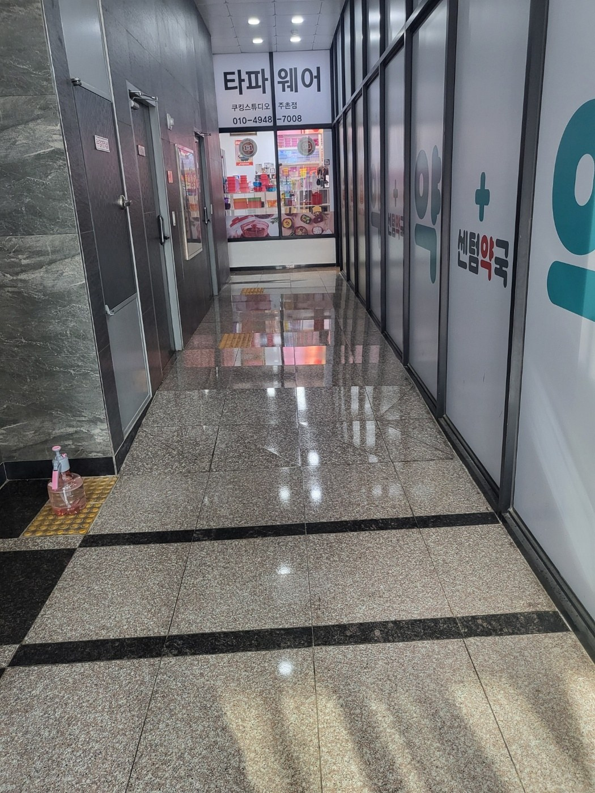
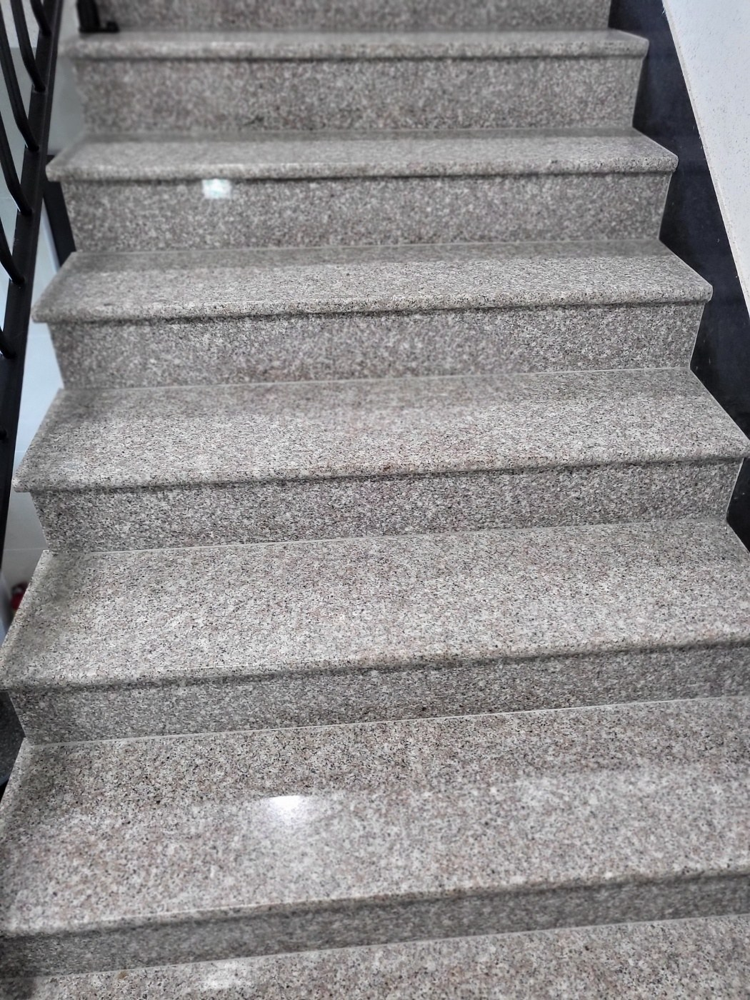
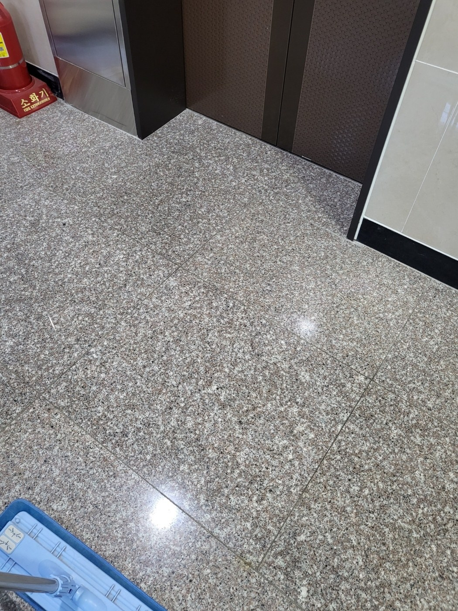
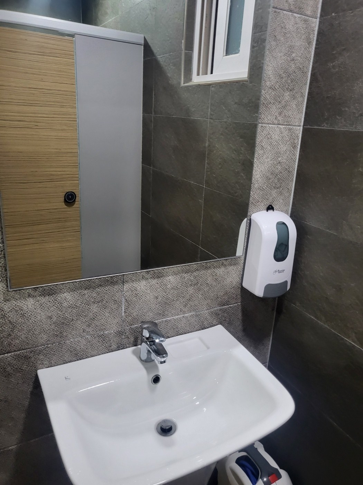
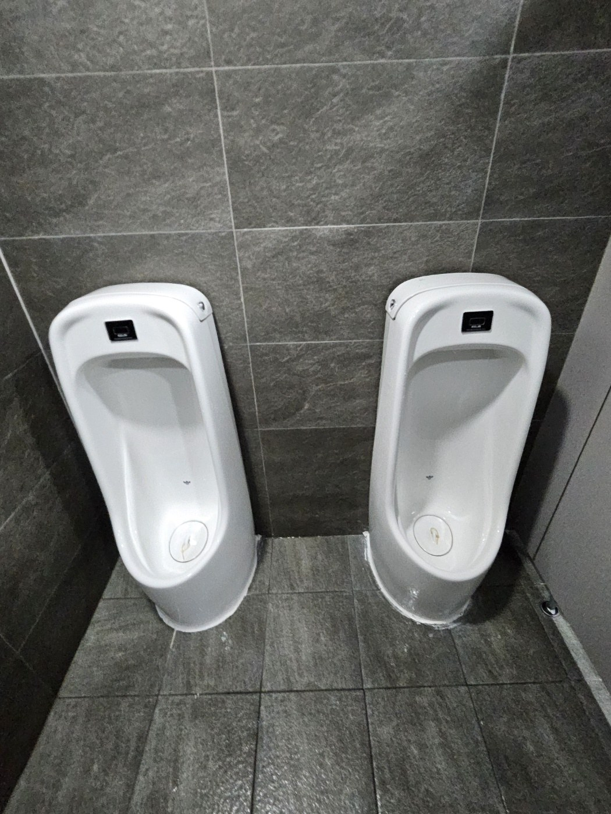
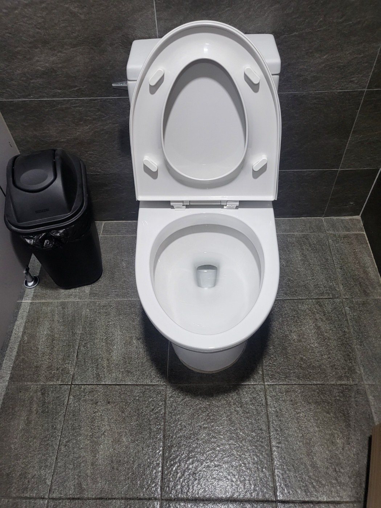

공용복도는 상가의 첫인상을 좌우합니다
출입이 많은 공용복도는 신발 오염과 먼지가 빠르게 쌓입니다. 바닥 전체를 한 번에 밀기보다 모서리와 벽면 가장자리, 점자블록 주변을 먼저 정리한 뒤 동선을 따라 마감하면 얼룩이 덜 남습니다. 광택이 있는 석재 바닥은 세제 잔여물이 남지 않도록 마감 상태까지 확인합니다.

계단은 평면 바닥과 관리 방법이 다릅니다
계단은 디딤판뿐 아니라 코너와 벽면 쪽에 미세먼지가 모이기 쉽습니다. 층간 이동이 많은 건물에서는 난간 주변과 계단 끝선을 함께 관리해야 전체가 고르게 정돈되어 보입니다. 물기가 남아 미끄럽지 않도록 마무리 상태도 확인합니다.

엘리베이터 앞은 오염이 집중되는 구역입니다
엘리베이터를 기다리는 동안 사람들이 반복해서 머무르기 때문에 바닥에 발자국과 미세먼지가 빠르게 누적됩니다. 문틀 주변과 벽면 하단까지 함께 확인하면 눈에 띄는 경계 오염을 줄일 수 있습니다. 청소 후에는 바닥 반사와 얼룩 잔존 여부를 확인합니다.

공용화장실은 세면대와 수전부터 인상이 달라집니다
세면대는 물때와 비누 자국이 잘 보이는 곳이라 사용자가 청결도를 바로 체감합니다. 수전과 배수구 주변, 세면대 곡면을 나누어 닦고 물기와 잔여 얼룩을 정리합니다. 거울 하단과 디스펜서 주변도 함께 점검해야 깔끔한 인상이 이어집니다.

소변기는 악취 관리가 중요합니다
소변기 내부만 닦는 것으로 끝내지 않고 하단 바닥과 벽면 접점까지 확인해야 냄새가 남는 원인을 줄일 수 있습니다. 이용량이 많은 상가에서는 정기적인 세정과 주변 바닥 관리가 특히 중요합니다. 배수 상태와 물기 정리까지 함께 확인합니다.

양변기 주변은 접촉면과 바닥을 함께 관리합니다
변기 안쪽뿐 아니라 시트, 도기 외부, 바닥 접점과 휴지통 주변까지 관리해야 실제 사용감이 달라집니다. 공용화장실은 짧은 시간에도 오염이 반복되므로 한 번의 대청소보다 정기적인 관리가 효과적입니다. 마감 후 도기 표면에 잔여 세제가 남지 않았는지 확인합니다.
김해 내외동 상가청소에서 자주 요청되는 범위
상가청소는 공용복도, 계단, 출입구, 엘리베이터 앞, 공용화장실, 유리문 주변 등 이용량이 많은 공간을 중심으로 상담합니다. 건물 내 병원·학원·사무실·카페 등 업종이 섞여 있으면 시간대별 이용량도 달라지므로 관리 주기와 작업시간을 함께 조정하는 것이 좋습니다.
정기관리 주기는 현장 이용량을 기준으로 정합니다
퍼펙트케어는 주 1회부터 주 6회까지 현장 상황에 맞춰 정기청소 상담이 가능합니다. 직원 수, 방문객 수, 운영시간, 바닥 재질, 화장실 이용량, 공용부 면적 등을 확인해 필요한 범위부터 안내합니다.
현장에 맞춘 무료 방문견적
정기청소와 상가·사무실·화장실 청소는 공간 크기만으로 동일한 견적을 내기 어렵습니다. 퍼펙트케어는 현장의 이용량, 바닥 재질, 오염도, 관리 범위를 확인한 뒤 필요한 작업을 안내합니다.